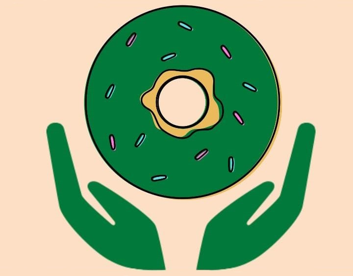

Desde 2010, ¡Hola Donuts! ha optado por ser más ecológico. Se han instalado paneles solares en todas las tiendas y los packaging de Donuts para llevar están hechos de papel 100% reciclado.
Las materias primas proceden únicamente de productores locales y sostenibles. Sólo se utilizan colorantes naturales extraídos de frutas, verduras o especias (por ejemplo, amarillo cúrcuma, rojo zumo de remolacha) para los glaseados.
No se utilizan conservantes químicos en la elaboración de los donuts, y los donuts avanzados después que las tiendas cierran se donan a instalaciones que albergan a personas sin recursos, cárceles o residencias de ancianos.
Es importante recordar que, además de los Donuts fritos originales, también se pueden encontrar donuts cocidos en horno, sin gluten y veganos, porque, como decían Fermando y Will, ¡los donuts son para todos!
